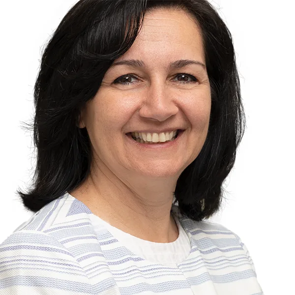

Faculty Folio
/
NJIT
Crawled from public sources
University
New Jersey Institute of Technology
Sponsored research
42
NIH projects
·
333
NSF awards
·
131
funded faculty
YWCC
119
faculty ·
76
on Google Scholar
View directory →
Newark College of Engineering
234
faculty ·
110
on Google Scholar
View directory →
Martin Tuchman School of Management (MTSM)
43
faculty ·
29
on Google Scholar
View directory →
College of Science and Liberal Arts
247
faculty ·
107
on Google Scholar
University Leadership
John Pelesko
Interim President
Applied mathematics
asymptotic methods
capillary surfaces
College Deans
Moshe Kam
Dean, Newark College of Engineering
System Theory
Control
Detection
Estimation
Jamie Souvenir
Dean, Ying Wu College of Computing
computing education
pervasive computing
wearable computing
Software Engineering

Oya Tukel
Dean, Martin Tuchman School of Management
Supply Chain Management
Innovation
project management